Lê Quý Đôn · Detail v2
Giữ bố cục v1, tăng chi tiết bên trong. Đây là thiết kế nội thất đề xuất theo phong cách trường học, không phải bản sao đo đạc của thư viện/phòng thực. Ảnh là trình xem voxel từ cùng dữ liệu xuất world, chưa phải ảnh trong Minecraft.
Bổ sung tượng phía tây cổng
Tượng trắng và bệ sẫm được giản lược theo ảnh tư liệu 2012; phía tây do người dùng xác nhận (bên phải khi đứng trong trường nhìn ra đường). Khoảng cách, kích thước và chi tiết điêu khắc vẫn ước lượng. Các sảnh của cả khu gần cổng/dãy cong và khu cạnh nhà thi đấu chưa được sửa hình khối; cần thêm ảnh định vị.
Xem cận tượng · Xem cùng cổng
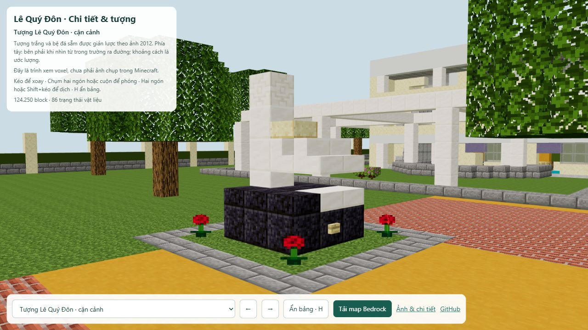
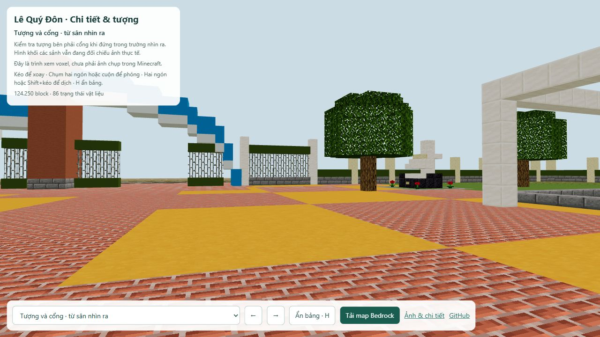
Những gì thay đổi
Thư viện, 30 phòng học mẫu, phòng thí nghiệm, phòng máy 16 trạm, ghế khán đài và hội trường. Thêm vật liệu gỗ/đá, bảng, kệ sách, thảm và ánh sáng trong phòng. Mô hình bàn ghế, lectern, kính, cây và trapdoor được trình xem lấy từ model vanilla thay vì thay bằng khối hộp.
Atlas có viền đệm, mipmap và lọc góc xiên để hạn chế nhấp nháy ở xa. Không cần shader pack cho các chi tiết bằng block trong world.
Kiểm tra
| Hạng mục | Kết quả |
|---|
| Block toàn trường | 124,218 |
| Ô thay đổi so với v1 | 4,927 |
| Mái và cổng v1 | Giữ nguyên dữ liệu |
| Ghép patch | Không xung đột giữa 4 patch nội thất |
| Lối đi | BFS cao 2 block tới các mục tiêu thư viện, phòng thí nghiệm, phòng máy và sân thi đấu; cửa/lối lớp học được kiểm tra trong patch riêng. |
| Java phụ tham chiếu | Đọc lại toàn bộ block, 288 chunk, biển chữ và schematic; CRC ZIP đạt. |
| Bedrock cho điện thoại/iPad | LevelDB thật; 288 chunk và toàn bộ 124.218 block đọc lại đạt. Các thuộc tính Java riêng được chuẩn hóa và ghi trong báo cáo. |
| Kiểm thử bằng game | Chưa thực hiện; kiểm tra dữ liệu và trình xem không thay thế thử mở Minecraft. |
Kết quả ghép · Java readback · Bedrock readback · Model/texture metadata
SHA-256: 43f557940738cb386bae8abaab072d1a9f0823837fcd6fa0911a5243328d836f
Thư viện
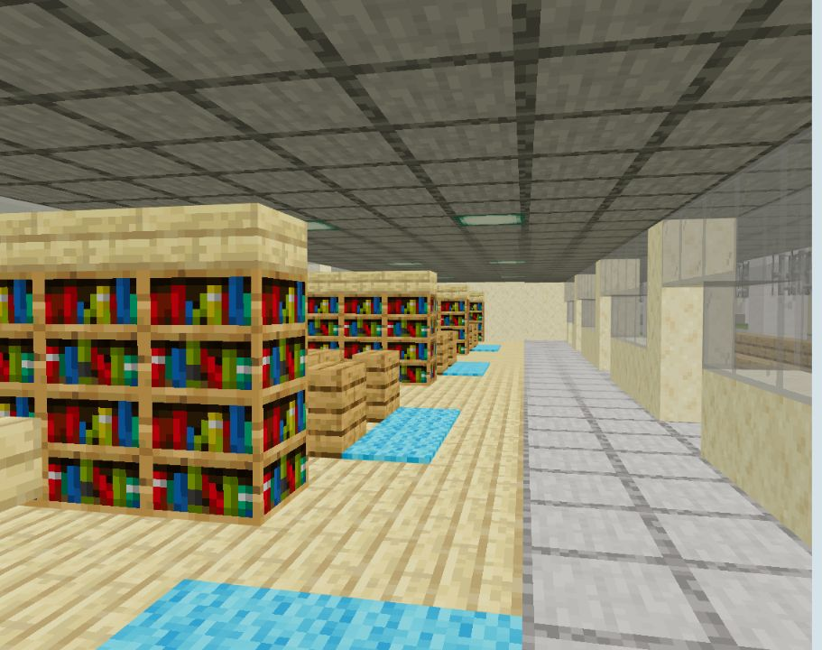
43 block kệ sách, 3 bàn đọc/12 ghế, quầy thủ thư và đèn trần. Nội thất đề xuất.
Xoay góc nàyThư viện · cận bàn đọc
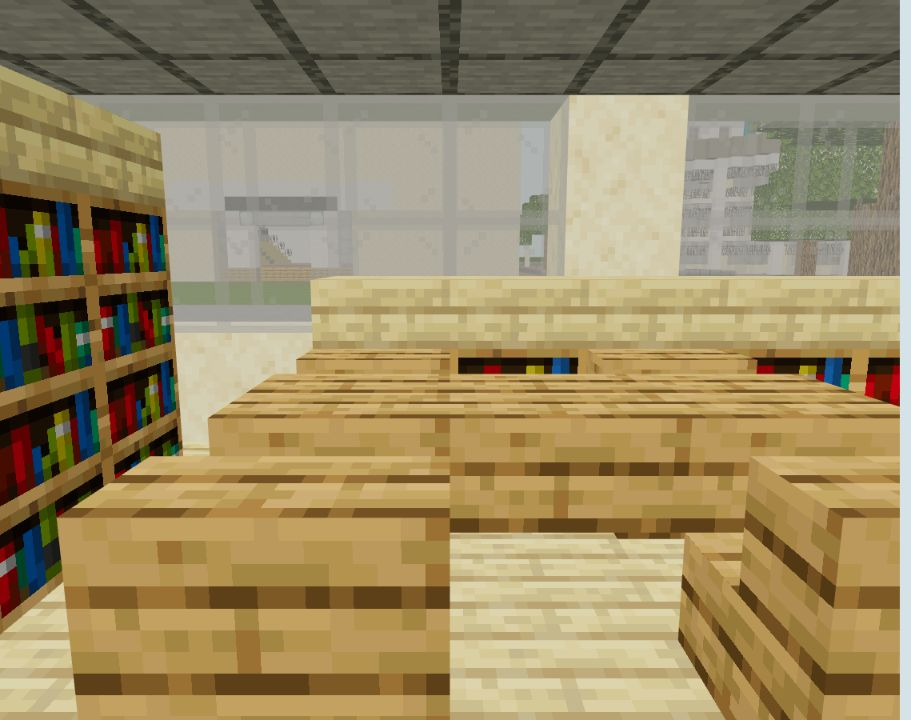
Gỗ sáng, ghế gỗ, mặt bàn slab và kệ hai tầng; còn lối đi dọc thông thoáng.
Xoay góc nàyLớp học mẫu
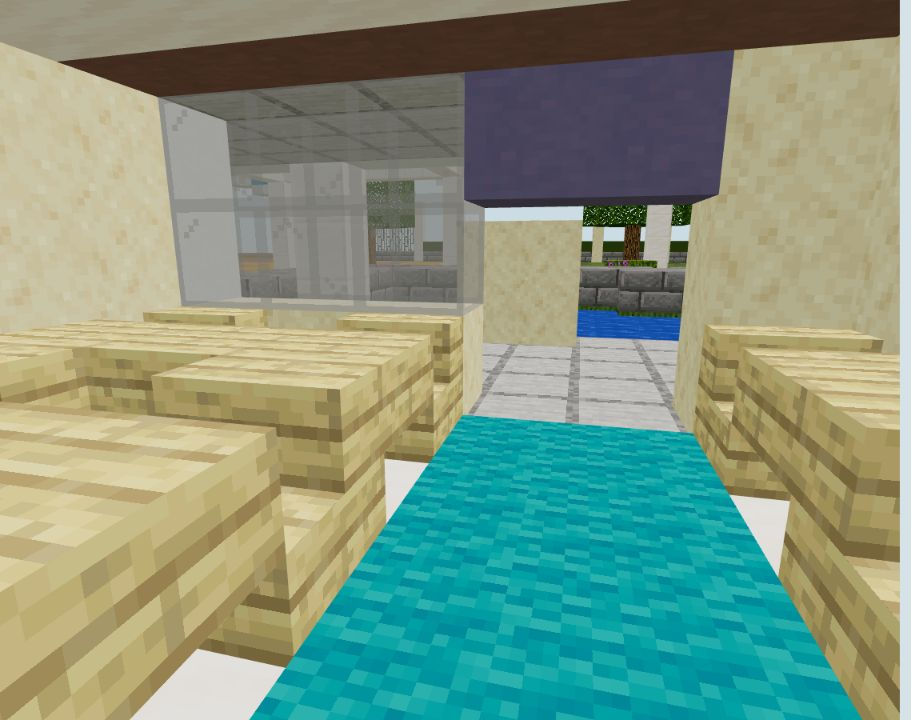
30 phòng được bố trí bàn ghế, bảng lớn, lectern, tủ sách, thảm và đèn. Mỗi phòng mẫu 6 chỗ do lưới tỷ lệ; không phải sĩ số thật.
Xoay góc nàyHành lang
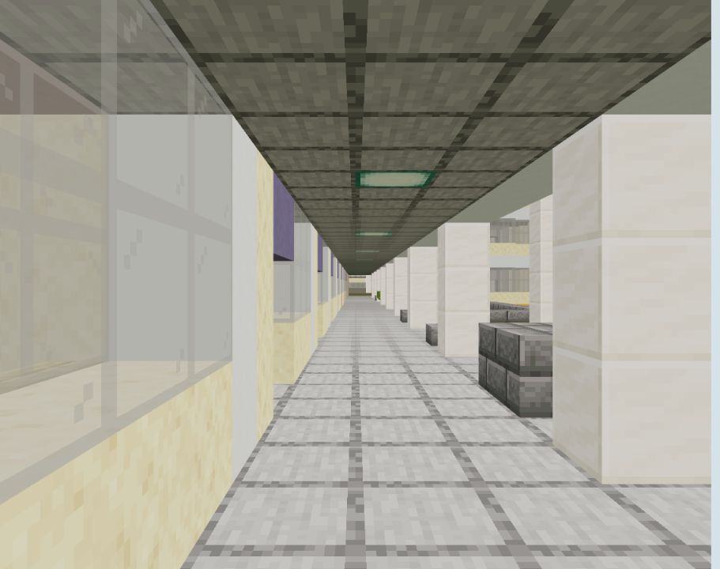
Thêm đèn trần, chỉ dấu cửa; dọn vật cảnh quan lọt vào lối đi của bản v1.
Xoay góc nàyPhòng thí nghiệm đề xuất
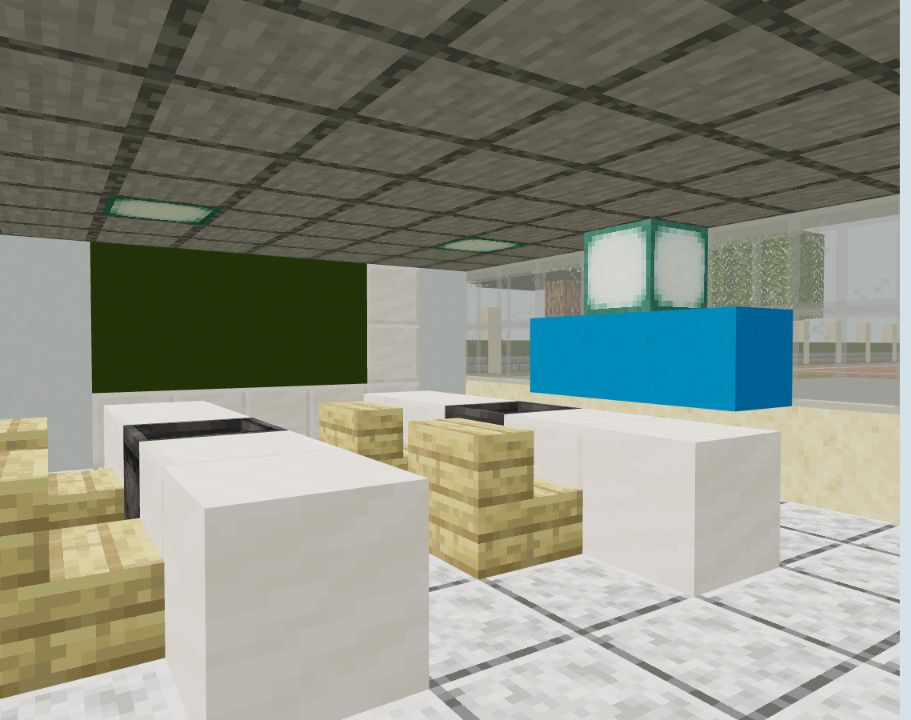
4 bàn làm việc, 4 bồn nước, bảng và kệ; chức năng phòng và bố trí chưa được ảnh thực xác nhận.
Xoay góc nàyPhòng máy đề xuất
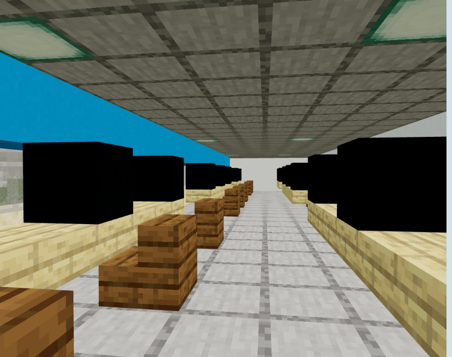
16 trạm máy với bàn gỗ và ghế; màn hình bằng concrete đen để giữ hình dạng trên Java và Bedrock. Nằm ở tầng 3 trong bản dựng.
Xoay góc nàyNhà thi đấu
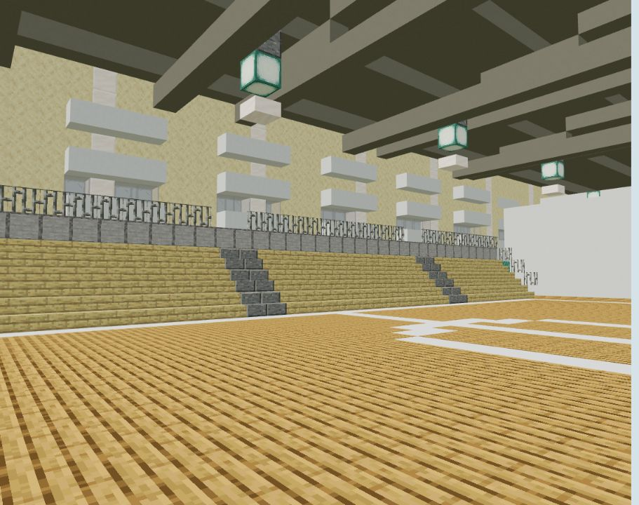
Ghế khán đài gỗ, lối bậc, lan can, đồ đạc đội và đèn/dầm trần.
Xoay góc nàyBảng điểm đề xuất
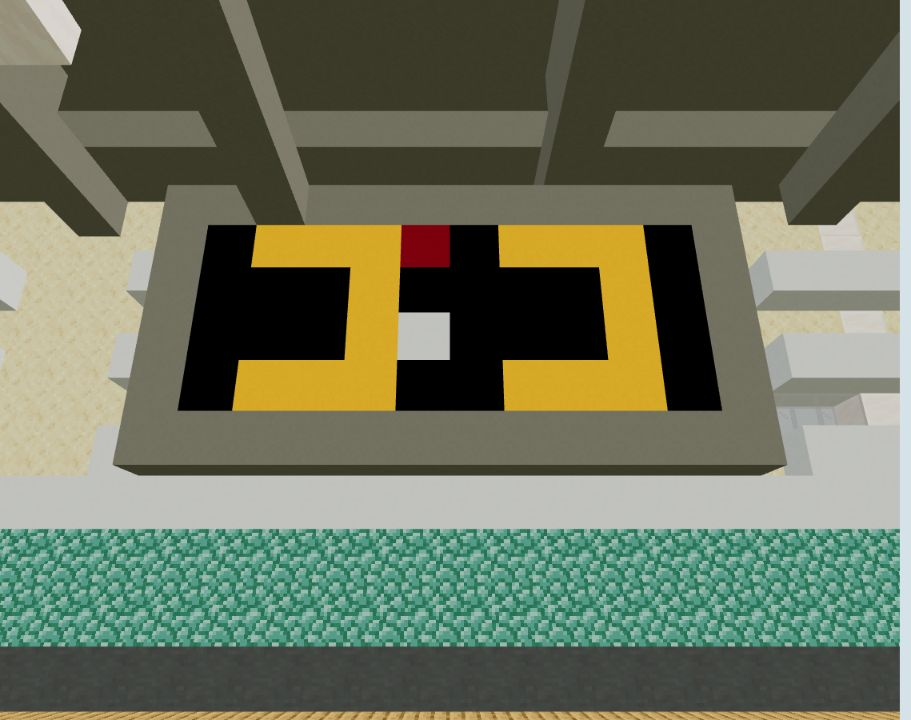
Các mảng điểm sáng màu là trang trí, không phải hệ thống bảng điểm điện tử hoạt động.
Xoay góc nàyHội trường đề xuất
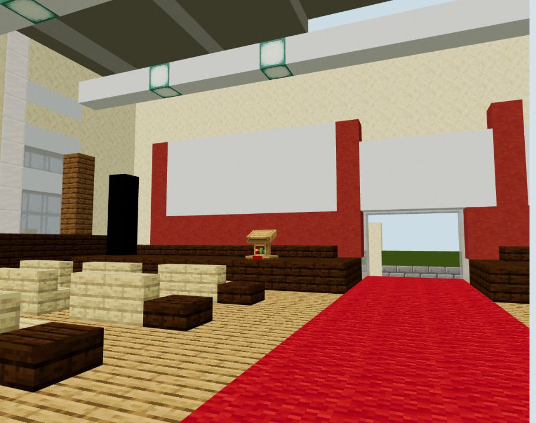
Hàng ghế, thảm giữa, sân khấu và màn chiếu; vị trí hội trường trong khối nhà này vẫn là suy diễn.
Xoay góc nàyToàn cảnh giữ bố cục v1
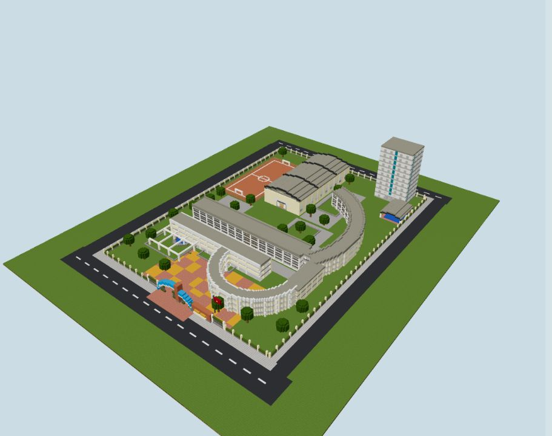
Mái và cổng được kiểm tra giữ nguyên; các thay đổi chủ yếu nằm trong phòng và hành lang.
Xoay góc nàyMặt bằng toàn khu
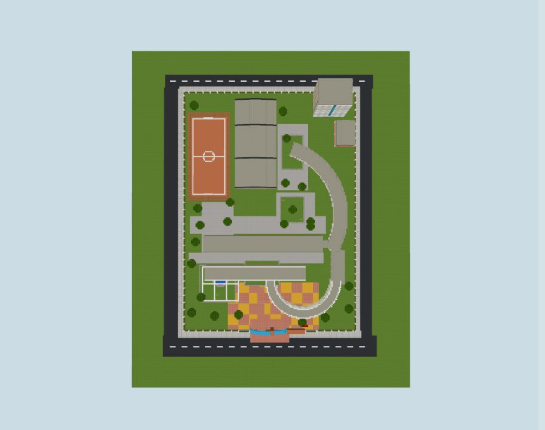
Giữ quy ước tỷ lệ gần đúng của bản v1; không có thêm khối nhà mới.
Xoay góc nàyGiới hạn
Bố cục trường vẫn kế thừa các ước lượng v1. Nội thất, chức năng phòng, bàn ghế và thư viện do bản dựng đề xuất. Tên sảnh A/B/C, vị trí bể bơi, mặt đứng KTX và phần cải tạo chưa được xác nhận đầy đủ. Ánh sáng trình xem khác game; đồ đạc không có mô phỏng tương tác ngoài hành vi block mặc định.